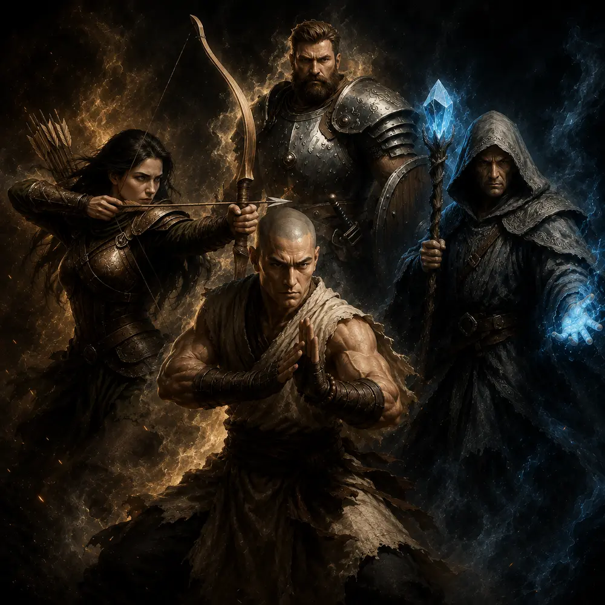
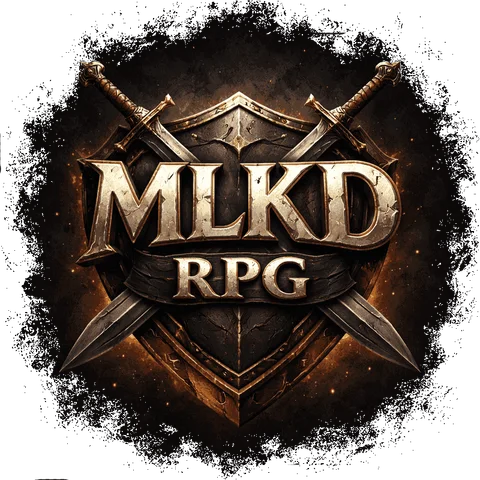

MLKD RPG
Um RPG completo dentro do Telegram, sem instalar nada. Cace, forje, entre numa guilda e suba a Torre Infinita até onde a coragem aguentar.
- 6 classes, 12 subclasses e evolução até o nível 90
- Arena PvP ranqueada, Guerra de Guildas e bosses mundiais
- Pets, forja lendária, relíquias e a Dimensão do Nexus